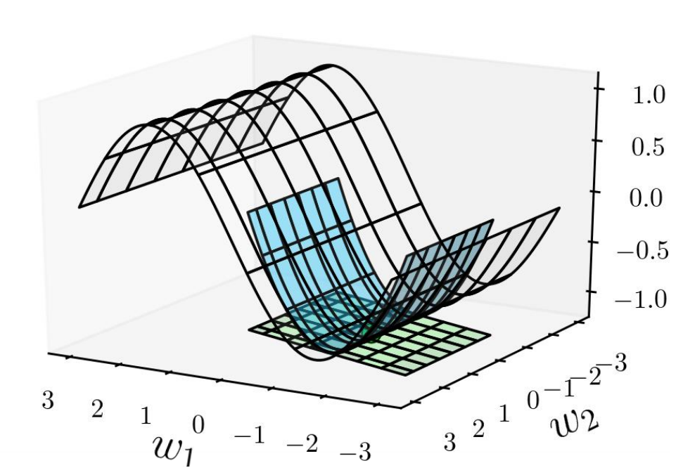
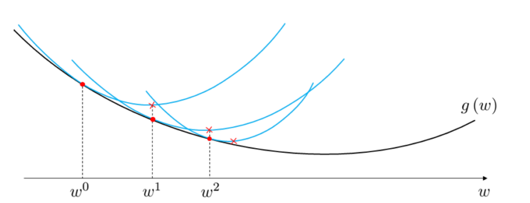
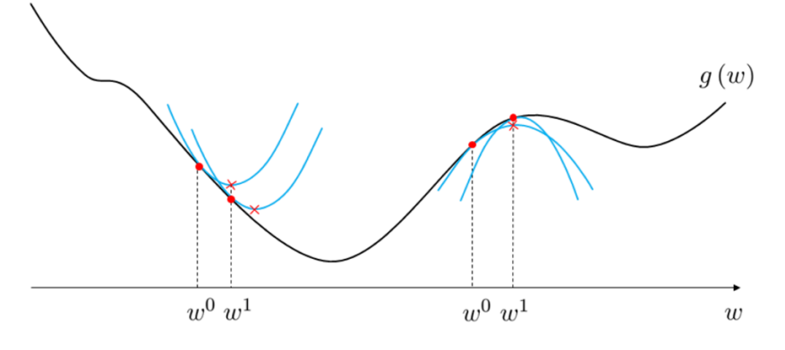
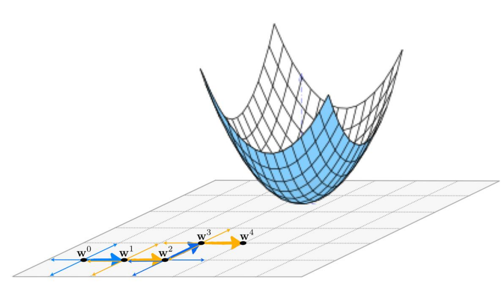
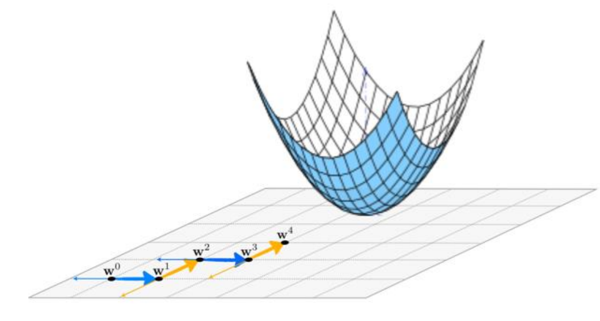
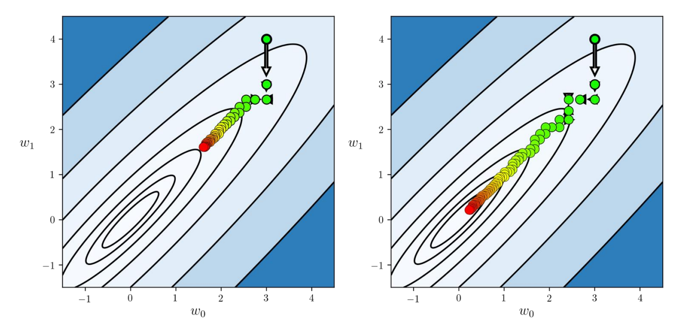
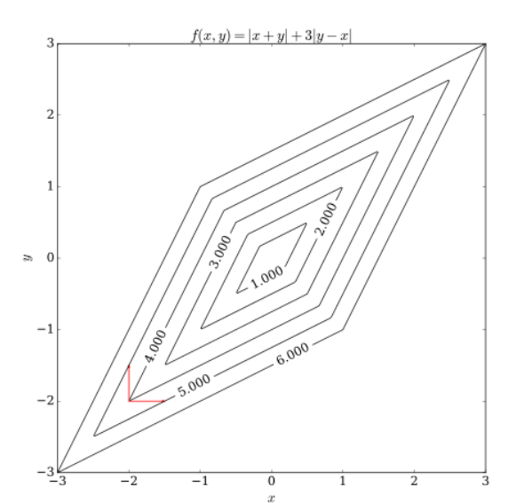
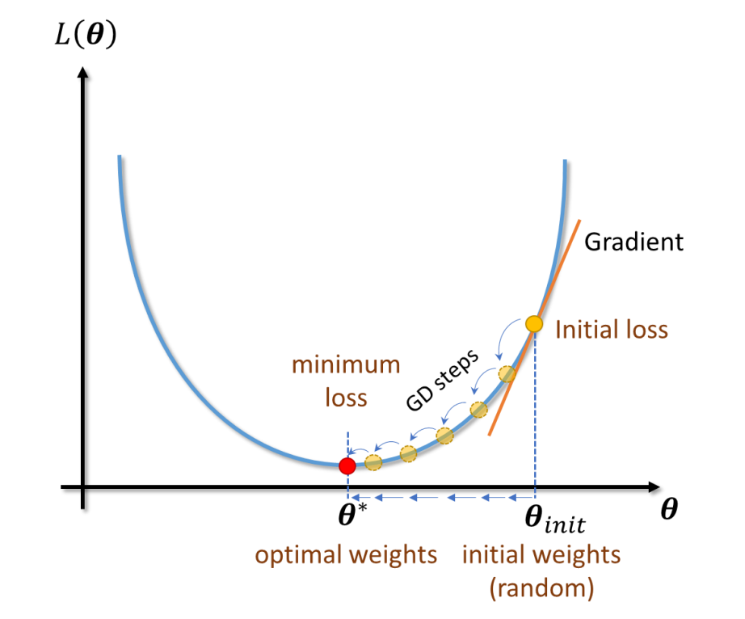

1. Recap and Lecture Objectives
In the previous lecture, we continued our study of regression models and the key tools used to train them. We covered optimization methods for fitting regression models, including gradient-based approaches as well as Newton’s Method and Coordinate Search. We also discussed how regularization improves generalization in linear regression, with particular emphasis on Ridge and Lasso.
In this lecture, we build on those foundations by focusing on optimization beyond basic gradient descent and on regularization techniques. We first summarize second-order and coordinate-based optimization methods. We then revisit Ridge, Lasso, and Elastic Net to understand how controlling coefficient magnitudes helps prevent overfitting and improves generalization.
Note: Performance metrics for evaluating regression models are covered in a separate set of extended notes, which should be consulted alongside this lecture.
2. Second-Order Optimization: Newton’s Method
Second-order optimization methods improve upon Gradient Descent by using curvature information of the loss surface. Instead of relying only on the slope (first derivative), these methods also use second derivatives to better estimate the location of the minimum.
2.1 Jacobian and Hessian Matrices
The Jacobian matrix is a matrix composed of first-order partial derivatives of a multivariable function. It describes how a function changes with respect to each variable and is commonly used in optimization and nonlinear systems. The Hessian matrix extends this idea by collecting second-order partial derivatives. It is an \(n \times n\) square matrix that captures the curvature of a function and plays a central role in second-order optimization methods.
For example, consider the function \(f(x,y) = x^2y + y^2x\). The Hessian matrix for this function is \[H_f(x,y)= \begin{pmatrix} 2y & 2x+2y\\ 2x+2y & 2x \end{pmatrix}.\]
2.2 Optimization
Second-order optimization methods use curvature information to guide the search for a minimum. While first-order methods such as Gradient Descent rely only on the slope of the loss surface, second-order methods additionally use the Hessian matrix to capture how the surface bends. This curvature information allows the optimizer to take more informed steps toward the minimum.
When the Hessian matrix is positive semi-definite, \[\Delta\boldsymbol{\theta}^T \mathbf{H}(\boldsymbol{\theta})\Delta\boldsymbol{\theta} \ge 0 \quad \text{for any } \Delta\boldsymbol{\theta}.\] the loss surface locally behaves like a convex parabola. In this setting, curvature information can be used to construct a more accurate local model of the loss function.
Using a second-order Taylor approximation, the loss near a point \(\boldsymbol{\theta}\) can be written as \[L(\boldsymbol{\theta}+\Delta\boldsymbol{\theta}) \approx L(\boldsymbol{\theta}) +\Delta\boldsymbol{\theta}^T\nabla_{\boldsymbol{\theta}} L(\boldsymbol{\theta}) +\frac{1}{2}\Delta\boldsymbol{\theta}^T \mathbf{H}(\boldsymbol{\theta})\Delta\boldsymbol{\theta}.\] To find the minimum of this quadratic approximation, we set the derivative with respect to \(\Delta\theta\) equal to zero: \[\nabla_{\boldsymbol{\theta}} L(\boldsymbol{\theta}) +\mathbf{H}(\boldsymbol{\theta})\Delta\boldsymbol{\theta}=0,\]
which yields the optimal update direction \[\Delta\boldsymbol{\theta} = -\mathbf{H}(\boldsymbol{\theta})^{-1} \nabla_{\boldsymbol{\theta}} L(\boldsymbol{\theta}).\]
Substituting this update into the iterative optimization framework leads to the Newton’s Method update rule \[\boldsymbol{\theta}^{t+1} = \boldsymbol{\theta}^{t} -\alpha \mathbf{H}(\boldsymbol{\theta})^{-1} \nabla_{\boldsymbol{\theta}} L(\boldsymbol{\theta}).\]
For comparison, standard Gradient Descent uses only first-order information: \[\boldsymbol{\theta}^{t+1} = \boldsymbol{\theta}^{t} -\alpha \nabla_{\boldsymbol{\theta}} L(\boldsymbol{\theta}^{t}).\]
A matrix is positive semi-definite when it is symmetric and has non-negative eigenvalues, which guarantees locally convex curvature and enables reliable descent toward a minimum.

2.3 Convexity
In optimization, the concept of convexity plays a crucial role in determining how easily we can find the global minimum of a function. A function \(f(\boldsymbol{\theta})\) is said to be convex if, for any two points \(\boldsymbol{\theta}_1\) and \(\boldsymbol{\theta}_2\) within its domain, the line segment connecting \(f(\theta_1)\) and \(f(\theta_2)\) lies above or on the graph of the function itself. Formally, for any \(\boldsymbol{\theta}_1, \boldsymbol{\theta}_2 \in \mathrm{dom}(f)\) and \(\lambda \in [0,1]\): \[f(\lambda \boldsymbol{\theta}_1 + (1-\lambda) \boldsymbol{\theta}_2) \leq \lambda f(\boldsymbol{\theta}_1) + (1-\lambda) f(\boldsymbol{\theta}_2).\]
This property guarantees that the function has a single global minimum and no other local minima, making optimization significantly easier.
For twice-differentiable functions, convexity can be checked using the Hessian matrix. A function is convex if its Hessian is positive semi-definite everywhere: \[\mathbf{H}(\boldsymbol{\theta}) \succeq 0.\] This means the loss surface curves upward in every direction, forming a bowl-shaped landscape that guides optimization algorithms toward the global minimum.
In contrast, non-convex functions do not satisfy the convexity condition. The line segment between two points may lie below the function curve, producing multiple local minima and maxima. In these cases, optimization algorithms such as gradient descent may become trapped in local minima and fail to reach the global solution.
2.4 Convergence
Newton’s method is particularly powerful for minimizing convex functions. Because it incorporates curvature information through the Hessian, it produces a quadratic approximation of the loss surface at every step. This allows the algorithm to move directly toward the minimum rather than following the slower zig-zag path typical of gradient descent.
Near the optimum, Newton’s method exhibits quadratic convergence, meaning the error decreases extremely rapidly once the algorithm is close to the minimum. In contrast, gradient descent typically achieves only linear convergence, requiring many more iterations to reach a similar level of accuracy.
However, Newton’s method becomes less reliable for non-convex functions. When the Hessian is not positive semi-definite, the quadratic approximation may point toward a saddle point or even a local maximum. As illustrated in the figures, the method may converge to an undesirable local minimum, move toward a local maximum, or oscillate between regions due to incorrect curvature information.
For this reason, Newton’s method is most effective when the loss function is convex or when the optimization has already reached a region close to a local minimum.


2.5 Computational Complexity
Although Newton’s method can converge in fewer iterations than first-order methods, it is significantly more expensive per iteration. The main challenge is the Hessian matrix, which is a \(P \times P\) matrix containing all second-order partial derivatives of the loss function.
Storing the Hessian requires \(O(P^2)\) memory, which quickly becomes impractical for models with many parameters. Computing the Hessian itself requires \(O(P^2)\) operations, and computing its inverse requires approximately \(O(P^3)\) time. Therefore, the total computational cost per Newton update is dominated by the matrix inversion step:
\[\boldsymbol{\theta}^{t+1} = \boldsymbol{\theta}^{t} -\alpha \mathbf{H}(\boldsymbol{\theta})^{-1} \nabla_{\boldsymbol{\theta}} L(\boldsymbol{\theta})\]
Where \(\mathbf{H}(\boldsymbol{\theta})\) is the Hessian matrix: \[\mathbf{H}(\boldsymbol{\theta})=\nabla_{\boldsymbol{\theta}}^2 L(\boldsymbol{\theta})\]
\[\boxed{\textbf{Total time per iteration of Newton's Method: } O(P^3)}\]
Because modern machine learning models often contain millions of parameters, directly computing and inverting the Hessian is typically infeasible. For this reason, most large-scale learning algorithms rely on first-order methods such as Gradient Descent or use approximate second-order methods (e.g., quasi-Newton methods) that avoid explicit Hessian computation.
3. Coordinate Search
When gradient information is unavailable or too expensive to compute, derivative-free optimization methods provide an alternative strategy.
3.1 Optimization
Coordinate search is a simple optimization technique that does not rely on gradients or second-order derivatives. Instead of computing the steepest descent direction, the algorithm explores the parameter space by moving along one coordinate axis at a time. At each iteration, the method tests whether moving in the positive or negative direction of a coordinate decreases the loss, and updates the parameters accordingly. The update rule is
\[\boldsymbol{\theta}^{t+1} = \boldsymbol{\theta}^{t} \pm \alpha \mathbf{e}_j\]
where \(\mathbf{e}_j = [0, \ldots, 1, \ldots, 0]^T\) is the \(j\)-th standard basis vector, which selects the coordinate direction being explored.
This approach is useful when gradients are unavailable, difficult to compute, or expensive to evaluate. Because it does not require derivatives, coordinate search belongs to the class of derivative-free optimization methods. However, this simplicity comes at a cost: the algorithm may require many function evaluations and can be slower than gradient-based methods in high-dimensional problems.
Figure 4 illustrates how the algorithm explores descent directions along coordinate axes, moving step-by-step toward lower values of the objective function.
{kind=link}

4. Coordinate Descent
While Coordinate Search explores directions without using gradients, Coordinate Descent improves efficiency by incorporating partial derivative information.
4.1 Optimization
Coordinate descent is an optimization strategy that improves the objective function by updating one parameter (one coordinate of \(\boldsymbol{\theta}\)) at a time. Instead of computing a full gradient vector across all parameters, the algorithm isolates a single coordinate direction and performs a one–dimensional optimization step along that axis. This greatly simplifies each update and reduces computational cost, especially in high–dimensional problems.
At each iteration, the algorithm selects a coordinate index \(j \in \{1,\dots,P\}\) and updates only the corresponding parameter while keeping all other parameters fixed. For a continuously differentiable loss function \(L(\boldsymbol{\theta})\), the update rule becomes
\[\theta_j^{t+1} = \theta_j^{t} -\alpha \nabla_{\theta_j} L(\boldsymbol{\theta}).\]
This process is repeated across coordinates until convergence. The coordinates may be selected cyclically, randomly, or based on a heuristic such as the largest gradient magnitude. By decomposing a high–dimensional optimization problem into a sequence of simpler one–dimensional updates, coordinate descent can be particularly effective for large-scale machine learning problems where computing full gradients is expensive.

4.2 Convergence
In early iterations, coordinate search methods can make progress by exploring all coordinate directions, but coordinate descent quickly becomes more efficient once gradient information is used. Because each step directly follows the partial derivative with respect to a single parameter, the algorithm typically identifies descent directions faster and reduces the loss more effectively than coordinate search.
As illustrated in Figure 6, coordinate descent tends to reach lower-cost regions of the objective function in fewer iterations. Although each step only adjusts one parameter, the repeated sequence of updates gradually drives the parameters toward a minimum. This stepwise progress often produces a characteristic “zig-zag” path toward the optimum.
{kind=link}

4.3 Advantages
One of the main strengths of coordinate descent is its simplicity. Each update requires only a partial derivative with respect to a single parameter, making the method easy to implement and computationally inexpensive. Unlike second-order methods such as Newton’s method, coordinate descent does not require storing or inverting large matrices, which makes it highly scalable to problems with many parameters.
Because of its low memory requirements and cheap updates, coordinate descent is widely used in large-scale machine learning applications such as Lasso regression, sparse optimization, and high-dimensional linear models.
4.4 Limitations
Despite its simplicity, coordinate descent has important limitations. The algorithm can struggle when the objective function is non-smooth or when variables are highly coupled. In such cases, improving one parameter at a time may lead to slow progress, oscillations, or convergence to suboptimal points such as saddle points.
Figure 7 illustrates an example of a non-smooth multivariable function. The sharp corners of the level curves make it difficult for the algorithm to determine a consistent descent direction. As a result, the optimization path (shown in red) can stall or progress very slowly toward the global minimum.
{kind=link}

The red trajectory highlights how the optimization may stagnate or move inefficiently due to the non-smooth geometry of the loss surface.
5. Summary of Optimization Methods
We now summarize the optimization methods discussed in Lecture 8 (first-order methods) and Lecture 9 (second-order and coordinate-based methods).
| Method | Uses Gradient? | Uses Hessian? | Per–Iteration Cost |
|---|---|---|---|
| Gradient Descent | Yes | No | Low |
| Newton’s Method | Yes | Yes | Very High (\(O(P^3)\)) |
| Coordinate Search | No | No | Medium |
| Coordinate Descent | Partial | No | Low |
Each method presents a trade-off between computational cost and convergence speed. In practice, the choice of optimizer depends on the size of the dataset, the number of parameters, and the availability of derivative information.
6. Ridge Regularization
6.0.0.1 Notation note.
Some figures in this lecture use the symbol \(\gamma\) to denote the regularization strength. Throughout the notes, we use \(\lambda\) for consistency with the course notation. These symbols refer to the same quantity.
6.1 Formulation
Standard linear regression models attempt to fit data samples by minimizing the least squares cost. However, this approach can become problematic in practical settings. When features contain noise, the learned coefficients may change dramatically, making the model unstable. Similarly, when only a small amount of training data is available, the model can easily overfit and fail to generalize to new data. These issues arise because large coefficients can have a disproportionately high impact on model predictions.
Ridge Regression (also called Tikhonov regularization) addresses this problem by shrinking the regression coefficients \(\boldsymbol{\theta}\). It does so by imposing a penalty on the squared \(\ell_2\) norm \(\|\boldsymbol{\theta}\|_2^2\), which discourages excessively large parameter values. This penalty is incorporated directly into the training objective.
During training, the regularization term is added to the cost function: \[L(\boldsymbol{\theta}) = \frac{1}{N}\sum_{i=1}^{N} \left(\boldsymbol{\theta}^T\mathbf{x}_i - y_i\right)^2 + \frac{\lambda}{N}\|\boldsymbol{\theta}\|_2^2\]
We use \(\lambda\) to denote the regularization strength to remain consistent with the course notation file.
where \(\lambda > 0\) is a hyperparameter that controls the strength of the shrinkage. Larger values of \(\lambda\) lead to stronger regularization and smaller coefficients.
It is important to note that the regularization term is used only during training. Once the model has been trained, its performance is evaluated using the standard prediction error without including the regularization penalty.
6.2 Robustness to Noise
Standard linear regression can be highly sensitive to noise in the training data. When small perturbations or noisy samples are introduced, the fitted regression line can change dramatically, resulting in large variability in the estimated coefficients. This behavior is illustrated in Figure 8, where multiple models are trained on slightly different noisy datasets. The gray regression lines vary widely, demonstrating that ordinary least squares can produce unstable parameter estimates when the data contains noise.
{kind=link}
Ridge regression addresses this issue by adding an \(L_2\) penalty that discourages large coefficient values. By shrinking the parameters toward zero, the model becomes less sensitive to fluctuations in the data and produces more stable predictions. As shown in Figure 9, the fitted lines produced by ridge regression exhibit significantly less variation across noisy datasets. This reduction in variance highlights one of the key benefits of regularization: improved robustness to noise and better generalization to unseen data.
{kind=link}
Interactive Notebook: Figure 9.8 Noise Sensitivity (OLS)
Control noise and compare coefficient variability under OLS.
Interactive Notebook: Figure 9.9 Ridge Under Noise
Control noise and compare ridge robustness to OLS.
6.3 Reduce Overfitting to Limited Training Data
Overfitting becomes particularly severe when only a small amount of training data is available. In such cases, standard linear regression tends to fit the training points too closely, capturing random fluctuations rather than the underlying trend. This behavior is illustrated in Figure 10, where the linear regression model (red line) fits the limited training samples almost perfectly but fails to generalize well to new data.
{kind=link}
Ridge regression mitigates this problem by constraining the magnitude of the coefficients. The resulting model (blue line) does not pass exactly through the training points but instead captures a smoother and more general trend. As a result, it performs better on unseen test samples (green dots). This example demonstrates how regularization introduces a small amount of bias in exchange for a large reduction in variance, ultimately improving predictive performance.
Interactive Notebook: Figure 9.10 Sample Count Effect
Control number of data points and inspect fit stability.
6.4 Effect of \(\lambda\) on \(\boldsymbol{\theta}\) Magnitudes
The regularization strength in ridge regression is controlled by the hyperparameter \(\lambda\), which determines how strongly large coefficients are penalized. When \(\lambda\) is very small, the penalty term has little influence, and the model behaves similarly to standard linear regression. In this regime, the coefficients can take on larger values, allowing the model to closely fit the training data.
As \(\lambda\) increases, the penalty becomes stronger and the coefficients are increasingly shrunk toward zero. This shrinkage reduces model complexity and helps prevent overfitting. When \(\lambda\) becomes very large, the coefficients approach zero and the model converges toward a nearly flat line that approximates the mean of the target variable. Figures 11 and 12 illustrate how increasing \(\lambda\) progressively reduces coefficient magnitudes and simplifies model behavior.
{kind=link}
{kind=link}
This trade-off between model flexibility and regularization strength highlights the bias–variance trade-off: small \(\lambda\) values yield low bias but high variance, while large \(\lambda\) values produce higher bias but lower variance.
Interactive Notebook: Figure 9.11 Lambda Effect
Adjust λ and observe coefficient shrinkage behavior.
Interactive Notebook: Figure 9.12 Lambda vs Model Behavior
Adjust λ and inspect resulting model complexity.
6.5 Normal Equation
The optimal parameter vector for ridge regression can be derived analytically using the normal equation. Recall that ridge regression augments the standard least-squares objective with an \(L_2\) penalty on the parameter vector. In matrix form, the ridge loss function is written as
\[L(\boldsymbol{\theta}) = \frac{1}{N} (\mathbf{X}\boldsymbol{\theta}-\mathbf{y})^T (\mathbf{X}\boldsymbol{\theta}-\mathbf{y}) + \frac{\lambda}{N}\boldsymbol{\theta}^T\boldsymbol{\theta}.\]
where \(\mathbf{X}\) is the design matrix, \(\mathbf{y}\) is the target vector, and \(\lambda > 0\) is the regularization hyperparameter that controls the strength of the penalty.
To obtain the optimal parameters, we differentiate the loss with respect to \(\boldsymbol{\theta}\) and set the gradient equal to zero:
\[\nabla_{\boldsymbol{\theta}}L = 2\mathbf{X}^T\mathbf{X}\boldsymbol{\theta} -2\mathbf{X}^T\mathbf{y} +2\lambda\boldsymbol{\theta}.\]
Setting this derivative to zero yields the linear system
\[(\mathbf{X}^T\mathbf{X}+\lambda\mathbf{I})\boldsymbol{\theta} = \mathbf{X}^T\mathbf{y}.\]
where \(\mathbf{I}\) is the identity matrix. Solving for \(\boldsymbol{\theta}\) gives the closed-form ridge regression solution
\[\boldsymbol{\theta} = (\mathbf{X}^T\mathbf{X}+\lambda\mathbf{I})^{-1} \mathbf{X}^T\mathbf{y}.\]
This equation shows how ridge regression stabilizes the solution by adding \(\lambda \mathbf{I}\) to \(\mathbf{X}^T\mathbf{X}\). This additional term improves numerical stability and ensures the matrix is invertible, especially when features are highly correlated or when the dataset is small.
6.6 Gradient Descent
Although ridge regression admits a closed-form solution, in many practical machine learning settings the number of parameters is very large. Computing a matrix inverse becomes expensive and memory intensive. For this reason, ridge regression is often solved using gradient descent.
Starting from an initial parameter vector, gradient descent iteratively updates the parameters according to
\[\boldsymbol{\theta}^{(t+1)} = \boldsymbol{\theta}^{(t)} -\alpha \nabla_{\boldsymbol{\theta}}L.\]
where \(\alpha\) is the learning rate. For ridge regression, the gradient of the loss function is
\[\nabla_{\boldsymbol{\theta}}L = -\frac{2}{N}\sum_{i=1}^{N} (y_i-\boldsymbol{\theta}^T\mathbf{x}_i)\mathbf{x}_i +\frac{2\lambda}{N}\boldsymbol{\theta}.\]
The hyperparameter \(\lambda\) controls the trade-off between accurately fitting the training data and keeping the parameter magnitudes small. A small \(\lambda\) produces behavior similar to standard linear regression, while a large \(\lambda\) increases regularization and produces a smoother, lower-variance model.

7. Lasso Regression: Formulation
7.1 Overview
Lasso regression (Least Absolute Shrinkage and Selection Operator) is a linear regression technique that incorporates L1 regularization, which adds a penalty proportional to the absolute value of the regression coefficients.
This approach is particularly useful when working with datasets that contain many features, some of which may be irrelevant or only weakly related to the target variable. In such settings, ordinary linear regression can produce unstable models that overfit the training data. Lasso addresses this issue by encouraging simpler models that rely only on the most informative features.
7.2 L1 Regularization
The key difference between Lasso regression and ordinary linear regression is the addition of an L1 penalty to the loss function. This penalty is the sum of the absolute values of the regression coefficients, which discourages large parameter values and promotes sparsity.
The Lasso objective function is given by: \[L(\boldsymbol{\theta}) = \frac{1}{N}\sum_{i=1}^{N} (\boldsymbol{\theta}^T\mathbf{x}_i-y_i)^2 + \lambda\sum_{j=1}^{P}|\theta_j|\]
The regularization parameter \(\lambda\) controls the strength of the penalty. When \(\lambda=0\), the model reduces to standard linear regression. As \(\lambda\) increases, the penalty becomes stronger, forcing coefficients to shrink toward zero.
7.3 Sparse Model
A defining property of Lasso regression is that it produces a sparse model. In a sparse model, many regression coefficients become exactly zero.
This behavior occurs because the L1 penalty introduces sharp “corners” in the optimization landscape. During optimization, the solution often lands exactly on these corners, causing some coefficients to become zero. As a result, Lasso automatically removes features that do not meaningfully contribute to predicting the target variable.
This property makes Lasso especially useful for high-dimensional datasets where the number of features is large.
7.4 Feature Selection
One of the most important advantages of Lasso over Ridge regression (which uses L2 regularization) is its ability to perform automatic feature selection. Because Lasso can drive coefficients to exactly zero, it effectively identifies and retains only the most relevant features while discarding irrelevant ones.
This leads to several practical benefits, including:
- Improved generalization and reduced overfitting
- Simpler and more interpretable models
- Reduced computational cost for downstream tasks
For datasets with many redundant or noisy features, Lasso provides a powerful tool for building compact and interpretable models.

8. Lasso Regularization: Gradient Descent
Unlike Ridge regression, the L1 penalty used in Lasso is not differentiable at zero. Therefore, we cannot compute a standard gradient. Instead, we use a subgradient.
The subgradient of the Lasso objective is:
\[\nabla_{\boldsymbol{\theta}} L(\boldsymbol{\theta}) = -\frac{2}{N}\sum_{i=1}^{N} (y_i-\boldsymbol{\theta}^T\mathbf{x}_i)\mathbf{x}_i +\lambda\,\text{sign}(\boldsymbol{\theta})\]
where the sign function is defined as
\[\text{sign}(\theta_j)= \begin{cases} +1 & \theta_j>0\\ -1 & \theta_j<0\\ [-1,1] & \theta_j=0 \end{cases}\]
The hyperparameter \(\lambda\) controls the balance between fitting the training data and encouraging sparsity. As \(\lambda\) increases, the regularization strength increases, pushing more coefficients toward zero.
9. Lasso vs Ridge Regression
We now summarize the key differences between Lasso (L1) and Ridge (L2) regularization:
The key takeaway is that Lasso and Ridge address overfitting in different ways. Ridge regression keeps all features in the model but reduces their influence by shrinking coefficients smoothly toward zero. In contrast, Lasso regression can eliminate features entirely by forcing some coefficients to become exactly zero, producing a simpler and more interpretable model.
In practice, Ridge is often preferred when most features are believed to contain useful information but may be noisy or correlated. Lasso is particularly useful when the dataset contains many irrelevant or redundant features and automatic feature selection is desirable.
10. Elastic Net Regularization
10.1 Overview
Elastic Net regularization is a linear regression technique that combines two regularization methods: Lasso (L1) regularization and Ridge (L2) regularization. It’s used to prevent overfitting by penalizing the magnitude of regression coefficients, and it is particularly useful when dealing with datasets that have a large number of features or when the features are highly correlated (multicollinearity).
The Elastic Net formula is as follows:
\[L(\boldsymbol{\theta}) = \frac{1}{N}\sum_{i=1}^{N}(\boldsymbol{\theta}^T\mathbf{x}_i-y_i)^2 + \lambda \left( r \sum_{j=1}^{P} |\theta_j| + (1 - r)\frac{1}{2}\|\boldsymbol{\theta}\|_2^2 \right)\]
The hyperparameter \(r \in [0,1]\) controls the balance between the L1 and L2 penalties. When \(r = 1\), Elastic Net becomes Lasso regression. When \(r = 0\), Elastic Net becomes Ridge regression. Values between 0 and 1 create a weighted combination of both penalties.
Elastic Net was introduced to address limitations of using Lasso or Ridge alone. Lasso can perform feature selection, but it may behave unstably when features are highly correlated, often selecting only one feature from a correlated group. Ridge regression handles correlated features well but cannot remove irrelevant features. Elastic Net combines the strengths of both methods by encouraging sparsity while also stabilizing coefficient estimates in the presence of multicollinearity.
10.2 Compared to Lasso and Ridge
How does Elastic Net compare to Lasso and Ridge regularization separately? To highlight their differences, we consider a fixed MSE loss with the following contour plot:
Interactive Notebook: Figure 9.15 Geometric Intuition for L1, L2, and Elastic Net
Explore the L1, L2, and Elastic Net constraint geometry together with their optimization paths.
The figure illustrates the geometric intuition behind L1 and L2 regularization and helps explain why Elastic Net combines the strengths of both approaches.
The contour lines represent level sets of the Mean Squared Error (MSE) loss in parameter space. The goal of training is to move toward the minimum of this loss surface. The white dots illustrate the path taken by gradient descent starting from an initial point (red square) and moving toward the optimal solution.
10.2.0.1 Top-left: \(\ell_1\) penalty geometry.
The diamond-shaped constraint region corresponds to the L1 penalty used in Lasso. Notice that the corners of the diamond lie on the coordinate axes. When the loss contours first touch this constraint region, they often intersect at one of these corners. Because corners lie on the axes, one of the coefficients becomes exactly zero. This explains why Lasso produces sparse solutions and performs automatic feature selection.
10.2.0.2 Top-right: Lasso optimization path.
The gradient descent trajectory shows that the solution is pulled toward the coordinate axes. The final optimum lies on the \(\theta_2 = 0\) axis, meaning one parameter has been eliminated entirely.
10.2.0.3 Bottom-left: \(\ell_2\) penalty geometry.
The circular constraint region corresponds to the L2 penalty used in Ridge regression. Unlike the diamond shape, the circle has no sharp corners. As a result, the loss contours typically touch the constraint boundary at a smooth point rather than on an axis. This leads to coefficients being shrunk toward zero but rarely becoming exactly zero.
10.2.0.4 Bottom-right: Ridge optimization path.
The gradient descent path moves smoothly toward the center. The final solution lies near the origin, but both parameters remain nonzero. Ridge therefore provides stability and shrinkage without performing feature selection.
10.2.0.5 Elastic Net as a compromise.
Elastic Net combines both penalties, creating a constraint region that lies between the diamond and the circle. This gives it two key advantages:
Like Lasso, it can produce sparse solutions and perform feature selection.
Like Ridge, it remains stable when features are highly correlated, avoiding the instability that Lasso can exhibit in such settings.
For this reason, Elastic Net is especially useful in high-dimensional datasets where the number of features is large relative to the number of training samples.